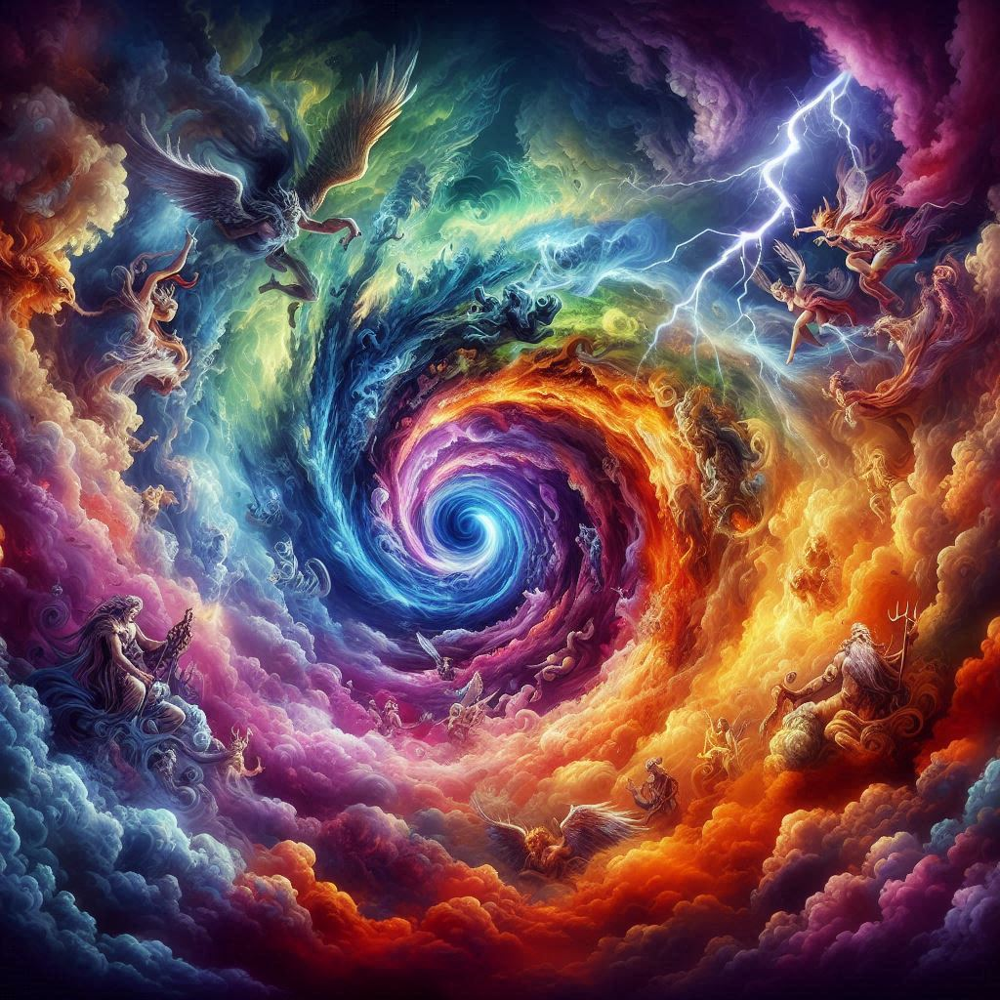
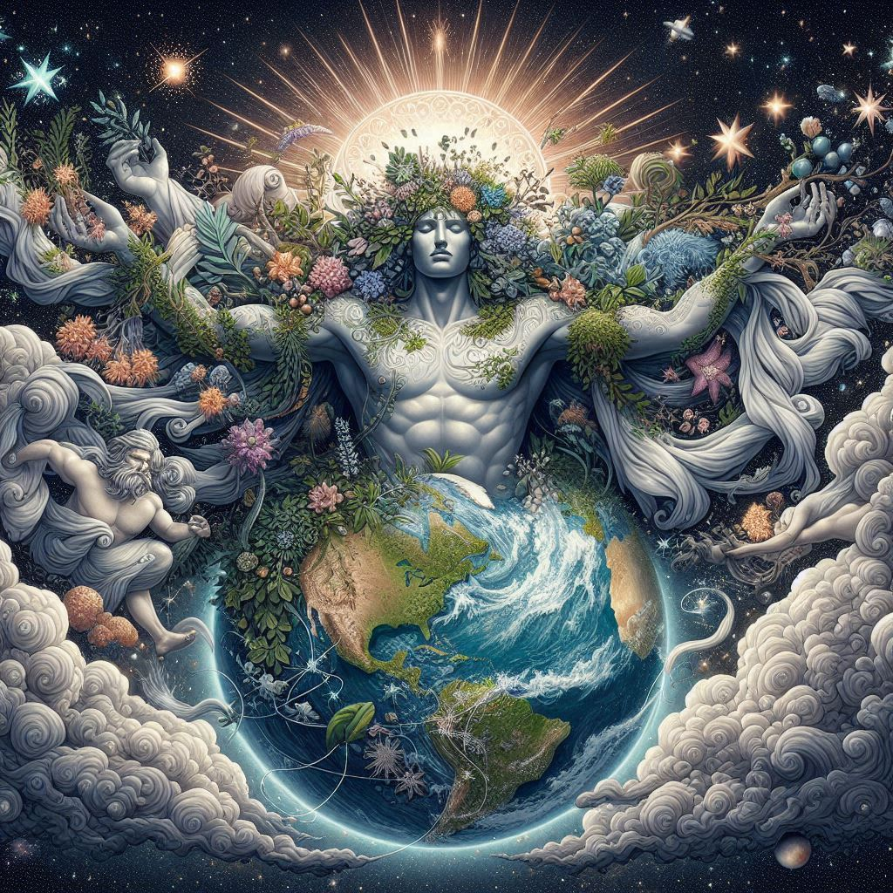
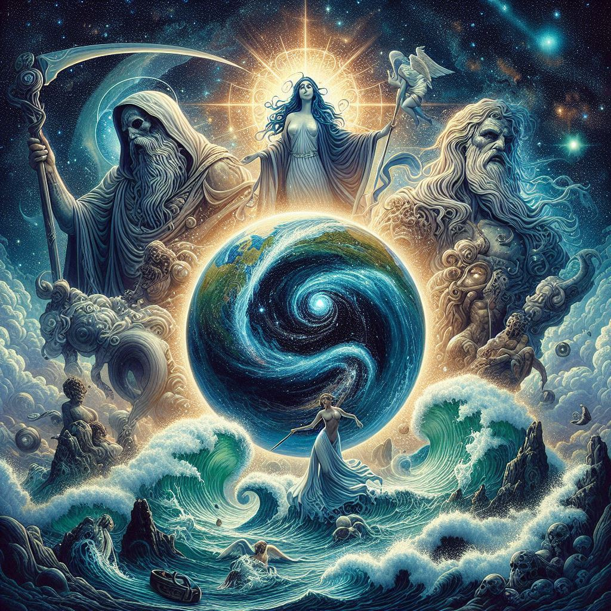
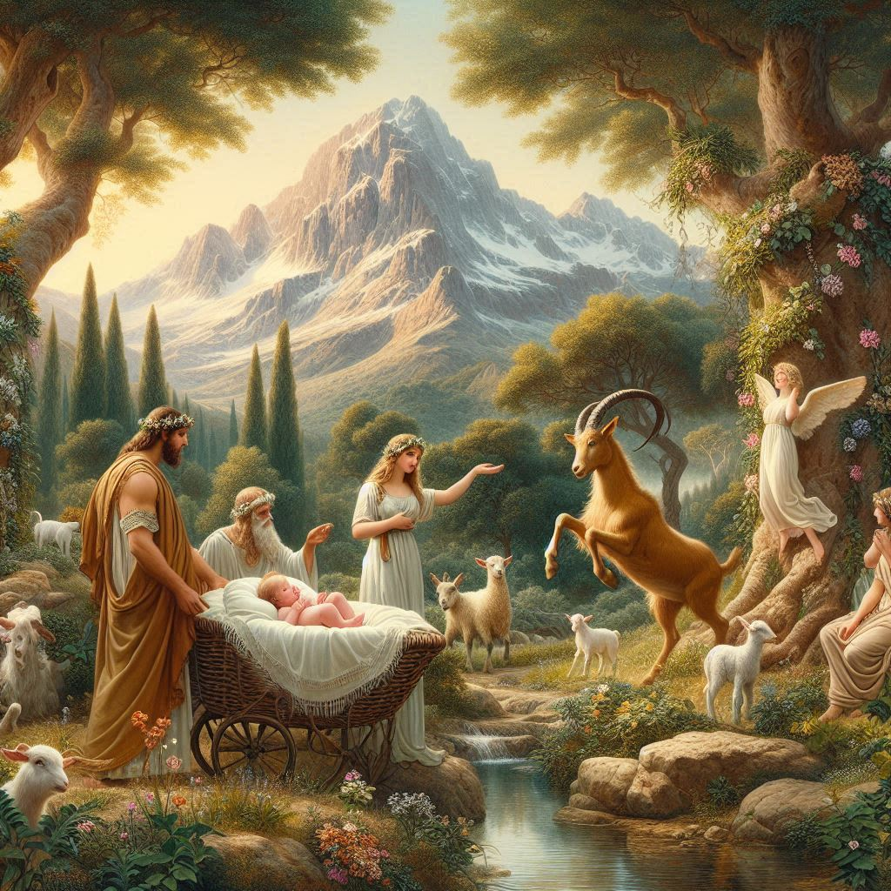
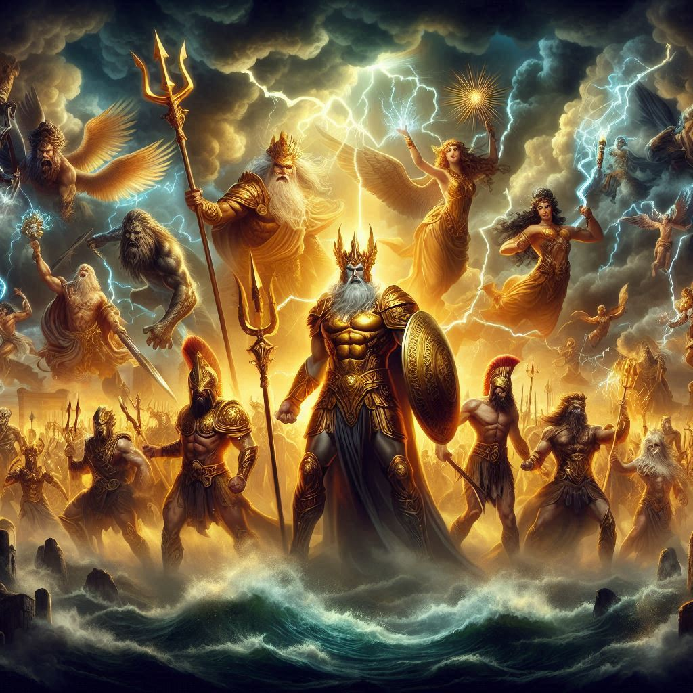
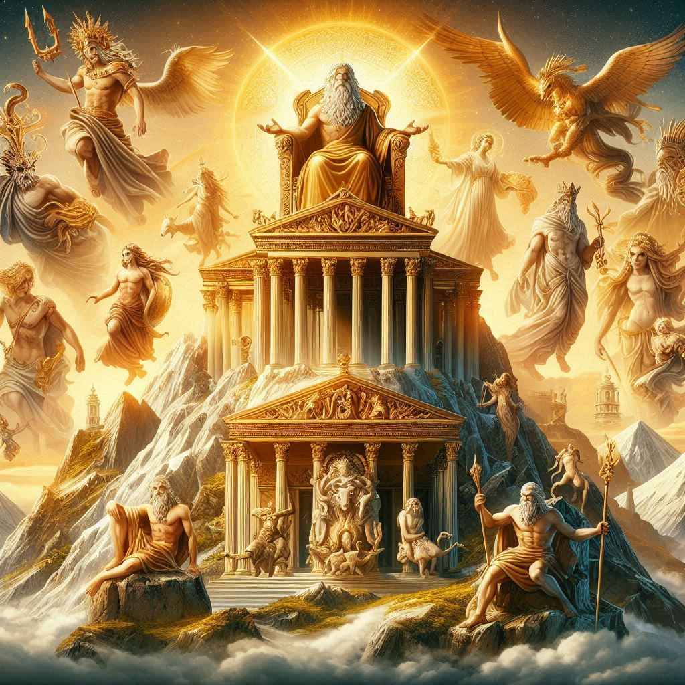

Questi miti, narrati in opere come la "Teogonia" di Esiodo, formano la base della cosmogonia greca, spiegando non solo l'origine del mondo e delle divinità, ma anche la struttura dell'universo e i rapporti di potere tra le varie entità divine.
Il Caos Primordiale
All'inizio dei tempi, secondo la mitologia greca, esisteva solo il Caos, un vuoto primordiale e senza forma. Dal Caos emersero diverse entità primordiali: Gaia (la Terra), Tartaro (gli inferi profondi), Eros (l'amore e la forza vitale), Erebo (l'oscurità) e Nyx (la notte).


La Nascita di Gaia e Urano
Gaia, la Terra, generò Urano, il Cielo, che divenne suo consorte. Dall'unione di Gaia e Urano nacquero i primi esseri divini: i Titani, i Ciclopi e gli Ecatonchiri (giganti dalle cento braccia e cinquanta teste).
La Ribellione di Crono
Urano, temendo il potere dei suoi figli, li imprigionò nel ventre di Gaia, scatenando la sua ira. Gaia persuase il suo figlio minore, Crono, a ribellarsi. Crono, armato di una falce, evirò il padre Urano e liberò i suoi fratelli. Dal sangue di Urano caduto sulla Terra nacquero le Erinni (dee della vendetta) e i Giganti.


La Nascita di Zeus e la Ribellione degli Dei
Quando Rea partorì il sesto figlio, Zeus, lo nascose sull'isola di Creta e ingannò Crono dandogli una pietra avvolta in fasce. Zeus crebbe in segreto e, una volta adulto, costrinse Crono a vomitare i suoi fratelli. Insieme, gli dei ribelli dichiararono guerra a Crono e ai Titani, una guerra conosciuta come la Titanomachia
La Titanomachia
La guerra tra gli dei olimpici, guidati da Zeus, e i Titani, capeggiati da Crono, fu epica e devastante. Dopo una lunga battaglia, Zeus e i suoi alleati prevalsero. I Titani sconfitti furono imprigionati nel Tartaro, un abisso profondo nei regni infernali


L'Età degli Dei Olimpici
Dopo la vittoria, Zeus divenne il sovrano del cielo e degli dei, Poseidone ottenne il dominio del mare, e Ade prese il controllo degli inferi. Così iniziò l'era degli dei olimpici, che abitavano il Monte Olimpo e governavano il mondo con poteri e influenze su vari aspetti della vita e della natura.